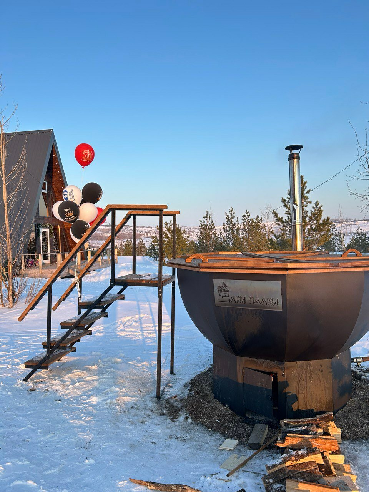
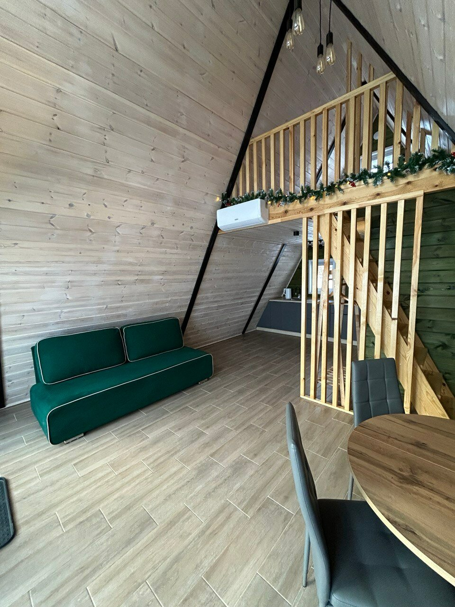
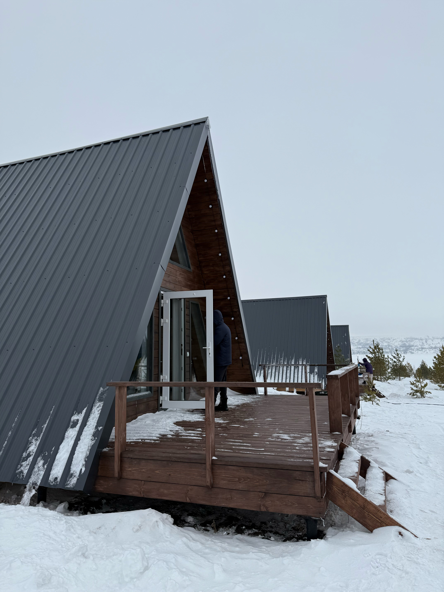

Зимняя сказка, которую можно забронировать
A-frame домики в соснах, чан на дровах, баня у самой воды и гирлянды до темна. Мы на поляне под Кумертау — пишем честно, без агрегаторов.
глэмпинг «Ёлки-Палки»
Кумертау · Башкирия
поляна в соснах
открыто · дек 2024
A-frame домики в соснах, чан на дровах, баня у самой воды и гирлянды до темна. Мы на поляне под Кумертау — пишем честно, без агрегаторов.
записки · от первого лица места

«С темнотой я топлю чан и зажигаю гирлянды. Пар над водой — и поляна горит, как ёлка.»
Чан греется дровами, табличка на борту — настоящая, наша.
«Утро в A-frame пахнет деревом. В треугольном окне — снег и сосны. Будильник не нужен.»
Домики-шалаши: тёплый свет, спальня наверху.
«Баня стоит на берегу: попарились — и сразу к воде. Летом здесь пляж и сапы.»
Парилка у самой кромки берега.


«Днём сосны держат тишину. Кому тихо слишком долго — у меня есть батут.»
Батут на территории — детям и взрослым.
«Ночью остаются только огоньки и звёзды. Темно ровно настолько, чтобы было красиво.»
Гирлянды и подсветка — главный вечерний сценарий.
Пишете в WhatsApp: +7 937 780-80-90 — расскажите, когда и кто едет.
Отвечаем, подсказываем по домикам и держим для вас даты.
Встречаем: A-frame в соснах, чан на дровах, баня у воды, гирлянды.
Написать в WhatsApp
wa.me/79377808090Или сразу звоните: +7 937 780-80-90 · владелец во ВКонтакте: vk.com/id869865907